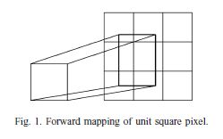
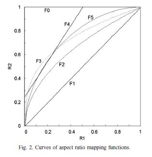
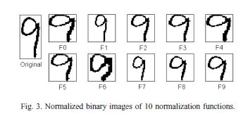

Paper-Handwritten digit recognition-investigation of normalization and feature extraction techniques
目录
论文
Abstract
在开发字符识别系统（developing character recognition system）中，各种性能的评估（the performance evaluation）对选择正确的方案（select the correct options）至关重要。
之前的工作中，我们提出了长宽比自适应归一化（aspect ratio adaptive normalization, ARAN），并评估了最先进的特征提取（state-of-the-art feature extraction）和分类技术（classification techniques）的性能（performance）。
这一次我们提出了一些改进的归一化函数（improved normalization functions）和方向特征提取策略（direction feature extraction strategies），并将其与现有技术进行性能方面的比较。
我们比较了三个不同数据源中（three distinct data sources）：
- 10 个归一化函数（normalization functions）
- 7 个基于维度（dimensions）
- 3 个基于时间（moments）
- 8 个特征向量
将归一化函数和特征向量结合起来，对每个数据集（each dataset）产生 80 个分类正确率（eighty classification accuracies）。
归一化函数的比较表明，基于 dimensions 的归一化函数的性能优于基于 moments 的归一化函数，而且纵横比映射（aspect ratio mapping）是流畅（influential）的。
特征向量的比较表面，改进后的特征提取策略（improved feature extraction strategies）优于基线策略（baseline counterparts）。
灰度图像（gray-scale image）中的梯度特征（gradient feature）表现最好，改进的 NCFE（normalization-cooperated feature extraction）特征也表现良好。
归一化（normalization）、特征提取（feature extraction）和分类（classification）的结合在知名数据集上产生了非常高的精度。
1 Introduction
- Optical character recognition（OCR）光学字符识别
- Character recognizer 字符识别器，包括以下任务：
- pre-processing 预处理
- 归一化图像（normalized image）的大小（size）和纵横比（aspect ratio）
- 像素值（pixel values）的插值技术（interpolation technique）
- feature extraction 特征提取
- classification 分类
- 参数（parametric）和非参数（nonparametric）统计分类（statistical classifiers）
- 神经网络（neural networks）
- 支持向量机（support vector machines, SVMS）
- 混合分类器（hybrid classifiers）
- pre-processing 预处理
对于 pre-processing，我们已经证明了字符图像的归一化对识别性能有重要的影响，提出了长宽比自适应归一化（ARAN）策略来提高识别性能。
对于 feature extraction，重点研究了 ARAN 实现的多样性（the diversity of implementation）和方向特征提取（direction feature extraction）。
ARAN 的性能取决于 aspect ratio mapping function。
direction feature 是 character recognition 中最常用的特征。其性能在很大程度上取决于特征的表示（representation of feature）和提取技术（extraction technique）。
特征向量表示表示链码（chaincodes）或梯度（gradients）的方向分布。
新的特征向量旨在提高 NCFE（normalization-cooperated feature extraction）的性能。
Normalization被认为是字符识别中最重要的预处理因素。
通常，字符图像通过插值（interpolation）/外推（extrapolation）线性映射（linearly mapped）到一个标准平面上。
通过线性映射，除了纵横比变化外，字符形状不会变形。
透视变换（perspective transformation）试图纠正字符宽度的不平衡。
矩归一化（moment normalization） 试图纠正旋转或倾斜（slant）。
非线性归一化（nonlinear normalization）用于均衡线密度（equalize the line density）。
倾斜归一化（slant normalization）可以通过上下文（context）来估计，而不是 moments。
Feature extraction 是字符识别的核心。
局部行程方向分布（distribution of local stroke direction）（direction feature）用于其高性能和易于实现而被广泛应用。
局部描边方向（local stroke direction）可以通过：
- skeleton
- chaincode
- gradient
来测量。
chaincode feature 被广泛采用
gradient feature 适用于灰度图像和二值图像。
为了增强方向特征的识别能力，提出了一些互补特征（complementary features）：如
- structural and curvature feature（结构特征和凹面特征）
- profile shape feature（廓形特征）
- curvature feature（曲率特征）
另一方面，所谓的归一化协同特征提取（normalization-cooperated feature extraction, NCFE）方法是从归一化图像之外的原始图像提取方向特征。
我们之前评估了手写字符识别中的一些统计（statistical）和神经分类器（neural classifiers），并发现一些分类器在低复杂度下具有很高的准确性。
SVM 在分类精度方面具有优势，但计算成本非常高。
为了测试归一化（normalization）和特征提取技术（feature extraction techniques）的性能，我们使用了三个具有较高精度的分类器：
- 多项式分类器（polynomial classifier）
- 判别学习二次判别函数（discriminative learning quadratic discriminant function, DLQDF）
- 径向基函数核（SVC-rbf）支持向量分类
- 8 个特征向量
- 基本特征类型（basic feature types）
- chaincode feature 链码特征
- profile shape feature 廓型特征
- NCFE 特征
- gradient feature 梯度特征
- 对 NCFE 的两种改进版本：
- enhanced NCFE with profile shape feature 增强的 NCFE 与轮廓形状特征
- 连续 NCFE
- 基本特征类型（basic feature types）
- 3 个数据库
- CENPARMI
- NIST
- Hitachi
基于 10 个归一化函数 和 8 个特征向量的组合给出了 80 个 classification accuracies。
此外，每个特征向量根据方向的分辨率有两种变化：4 个方向和 8 个方向，分别评估。
文章结构：
- 第 2 节描述了规范化策略；
- 第 3 节描述了特征提取技术；
- 第 4 节给出实验结果；
- 第 5 节给出结论。
2 Normalization techniques
2.1 Implementation of normalization 正则化的实施
为了便于特征提取和分类，归一化图像平面(标准平面)的x/y维数(大小)是固定的。
然而，在纵横比自适应归一化（ARAN）中，标准平面的维度不一定是填充的。
根据纵横比，归一化图像以一维填充的平面为中心。
假设标准平面为正方形，边长用 $L$表示。将归一化字符图像的宽度和高度分别表示为 $W_2$ 和 $H_2$，纵横比定义为
如果归一化图像填充一维，则 $\max(W_2, H_2) = L$ 。但是，在字符图像质心对准标准平面中心的矩归一化中，归一化图像不一定填充一维，可能会超出标准平面。在这种情况下，$W_2$和 $H_2$ 不由L决定，将标准平面外的图像部分截断。
在 ARAN 的实现中，将规范化的字符图像填充到另一个尺寸为 $W_2 \times H_2$的柔性平面中，然后通过对齐边界或质心将该柔性平面平移至与标准平面重叠。
在下面，我们将演示如何将大小为 $W_1 \times H1$的字符图像转换为大小为$W_2 \times H_2$的规范化图像。转换可以通过正向映射或反向映射来完成。
将原图像和归一化后的图像分别表示为 $f(x, y)$ 和 $g(x’, y’)$，归一化后的图像由 $g(x’, y’) = f(x, y)$ 基于坐标映射生成。
正向映射（forward mapping）和反向映射（backward mapping）由 $x’=x’(x,y),y’=y’(x,y)$ 和 $x=x(x’,y’),y=y(x’,y’)$分别给出。
我们描述各种归一化方法的坐标映射（coordinate mapping of various of various normalization methods），然后解决像素的插值问题（interpolation of pixels）。
- 线性归一化（linear normalization）
- 矩归一化（moment normalization）
- 斜归一化（slant normalization）
- 非线性归一化（nonlinear normalization）
的正向映射（forward mapping）和反向映射见表1。
各种归一化方法的坐标映射
| Method | Forward mapping | Backward mapping |
|---|---|---|
| Linear | $x’=\alpha x$ $y’=\beta y$ |
$x=x’/\alpha$ $y=y’/\beta$ |
| Moment | $x’=\alpha (x-x_c)+x’_c$ $y’=\beta (y-y_c)+y’_c$ |
$x=(x’-x’_c)/\beta+x_c$ $y=(y’-y’_c)/\beta+y_c$ |
| Slant | $x’=x-(y-y_c)\tan\theta$ $y’=y$ |
$x=x’-(y+y_c)\tan\theta$ $y=y’$ |
| Nonlinear | $x’=W_2h_x(x)$ $y’=H_2h_y(y)$ |
$x=h_x^{-1}(x’/W_2)$ $y=h_y^{-1}(y’/H_2)$ |
其中，$\alpha$ 和 $\beta$ 表示变化比（ratios of transformation）：
$\alpha=W_2/W_1$
$\beta=H_2/H_1$
对于 nonlinear normalization，$h_x$ 和 $h_y$ 表示归一化后的累计线密度直方图（line density histograms）。
moment normalization 是指不旋转的线性变换，归一化图像的中心和大小由矩决定。
$(x_c,y_c)$ 表示原始图像的重心（质心）：
$x_c=m_{10}/m_{00}$
$y_c=m_{01}/m_{00}$
其中，$m_{pq}$表示几何矩：
- $m_pq=\sum_x\sum_y x^py^qf(x,y)$
$(x’_c,y’_c)$ 表示归一化平面的几何中心：
- $x’_c=W_2/2$
- $y’_c=H_2/2$
在基于 slant normalization based on moments，倾斜角度由二阶矩计算：
- $\tan\theta=\frac{\mu_{11}}{\mu_{02}}$
- 其中，$\mu_{pq}=\sum_x\sum_y(x-x_c)^p(y-y_c)^qf(x,y)$
- 在 forward mapping 中，$x$ 和 $y$ 是离散的，但 $x’(x,y)$ 和 $y’(x,y)$ 不一定是离散的。
- 在 backward mapping 中，$x’$ 和 $y’$ 是离散的，但 $x(x’,y’)$ 和 $y(x’,y’)$ 不一定是离散的。
- 在 forward mapping 中，所映射的坐标表示 $(x’,y’)$ 不一定填满归一化平面中的所有像素。因此在实现归一化时，需要进行坐标离散（coordinate discretization）或像素插值（pixel interpolation）
所有（original）字符图像都具有二值灰度（binary gray levels）。
我们使用坐标离散化（coordinate discretization）生成二进制归一化图像（binary normalized images）。
使用像素插值（pixel interpolation）生成灰度归一化图像（gray-scale normalized images）。
- 通过 discretization，映射的坐标 $(x’,y’)$ 或 $(x,y)$ 近似为最接近的整数 $([x’],[y’])$ 或 $([x],[y])$
- 在 the discretization of backward mapping 中，离散坐标 $(x’,y’)$ 扫描归一化后的像素平面和灰度 $f([x],[y])$ 分配给 $g(x’,y’)$
- 在 discretization of forward mapping 中，离散坐标 $(x,y)$ 扫描原始图像的像素，灰度 $f(x,y)$ 被赋给从 $([x’(x)],[y’(y)])$ 到 $([x’(x+1)],[y’(y+1)])$。
在反向映射生成灰度图像的插值（interpolation of backward mapping for generating gray-scale）中：
- 映射位置（mapped position）$(x,y)$ 被四个离散的像素包围。
- 灰度 $g(x’,y’)$ 是四个像素值的加权组合。
在前向映射插值生成灰度图像时，将原图像和归一化图像中的每个像素看作一个单位面积的平方。
通过坐标映射，将原图像的单位正方形映射到归一化平面上的矩形。

如图所示，在归一化平面中，每个与矩形重叠的单元正方形都被赋予与重叠面积成比例的灰度。
2.2 Aspect radio mapping 纵横比映射
为了实现归一化，需要确定归一化图像的宽度 $W_2$ 和高度 $H_2$。我们假设 $\max(W_2,H_2)$ 等于标准平面的边长 $L$。而 $\min(W_2,H_2)$由$R_2=\left\{\begin{matrix}
W_2/H_2, \mathrm{if}\ W_2<H2\\H_2/W_2,\mathrm{otherwise.}
\end{matrix}\right.$ 中的纵横比决定，归一化后的图像纵横比与原始图像的纵横比相适应。因此长宽比映射函数决定了归一化图像的大小和形状。
基于 dimension 的归一化，以实际图像的宽度和高度作为尺寸。
基于 moment 的归一化，
- 原始图像被设为中心点
- 边界被重新设置为 $[x_c-2\sqrt{\mu_{20}},x_c+2\sqrt{\mu_{20}}]$ 和 $[y_c-2\sqrt{\mu_{02}},y_c+2\sqrt{\mu_{02}}]$
- 尺寸被重新设置为 $W_1=4\sqrt{\mu_{20}}$ 和 $H_1=4\sqrt{\mu_{02}}$
图像平面被扩展或修建，以便适应在范围内。
- 计算原始图像的纵横比：$R_1=\left\{\begin{matrix}
W_1/H_1, \mathrm{if}\ W_1<H_1\\H_1/W_1,\mathrm{otherwise.}
\end{matrix}\right.$
改变归一化策略和纵横比映射函数，10 个归一化函数如下所示。
| 序号 | 描述 | 公式 |
|---|---|---|
| F0 | 固定长宽比 | $R_2=1$ |
| F1 | 保留长宽比 | $R_2=R_1$ |
| F2 | 长宽比的平方根 | $R_2=\sqrt{R_1}$ |
| F3 | 长宽比的立方根 | $R_2=\sqrt[3]{R_1}$ |
| F4 | 分段线性长宽比 | $R_1=\left\{\begin{matrix} 0.25+1.5R_1, \mathrm{if}\ R_1<0.5\\1,\mathrm{otherwise.}\end{matrix}\right.$ |
| F5 | 长宽比的正弦值的平方根 | $R_2=\sqrt{\sin\left(\frac{\pi}{2}R_1\right)}$ |
| F6 | F5 的非线性归一化，线密度直方图计算采用的方法 | |
| F7 | 保留长宽比的矩归一化 | |
| F8 | 长宽比平方根的矩归一化 | |
| F9 | 长宽比立方根的矩归一化 |
F0-F5如图所示，其中 F4、F5 优于 F0。

所有的归一化函数都是通过正向映射来实现的。图 3 为归一化函数对应的同一原始图像。

图 4 为对应的同一原始图像和归一化后的二值图像和灰度图像。
标准归一化平面尺寸为 $35\times 35$，当归一化图像的长宽比与原始长宽比偏离较大时，字符形状的变形也是相当大的。（如 F0 和 F5）
对于基于矩的归一化（F7，F8 和 F9），归一化图像在中心点居中，标准平面的任何维度都不被填充。